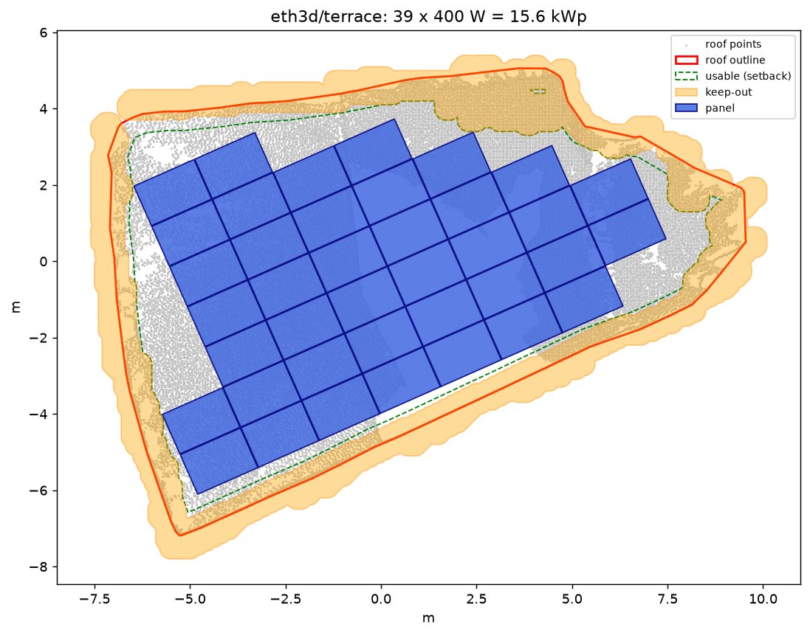
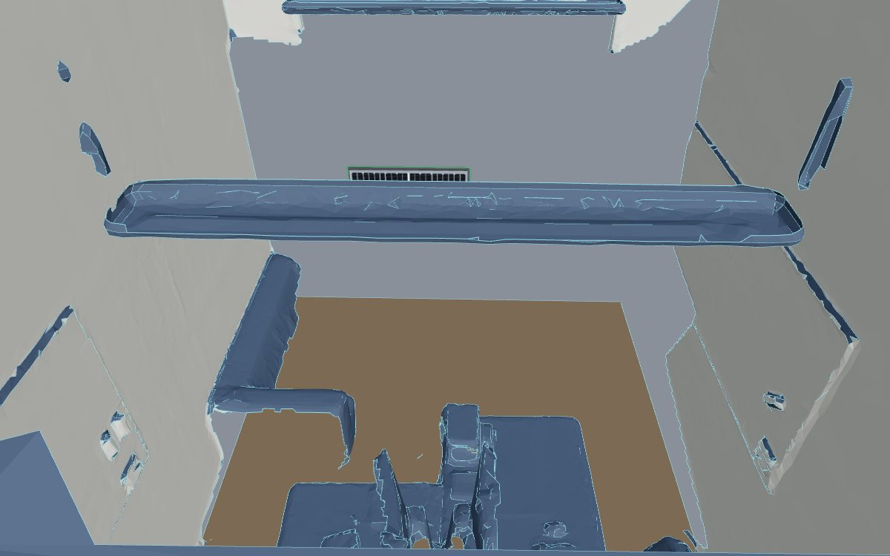

When there is no AutoCAD file, scan the place (photos or LiDAR), turn the points into clean planes and outlines,
and lay the panels out on that. Checked against a survey-grade laser scan, not against itself.
vr.html?phase=3: the terrace roof from the scan, 39 panels, with the LiDAR points switched on.

The plan design_panels.py draws: outline, setback, keep-outs and the panel grid.
Roof from a laser scan (ETH3D terrace)
39panels
15.6 kWpat 400 W each
130.7 m²roof outline
102.9 m²usable after setback
120000LiDAR points shown
How close is it? Checked against the true laser scan
1.0 cmmedian cloud error
81%of points within 5 cm
0.08°roof plane tilt error
0.955outline overlap (IoU)
-3.7%outline area error
0panel corners off the true roof
The 5-10 cm target holds for the roof plane and most of the outline (edge median
2.7 cm), but the worst outline edges are off by up to a metre where the scan was thin.
Interior sample: an office from a laser scan, as a SketchUp export

The ETH3D office levelled, walls squared and meshed to about 60k triangles, then shown in the AR page behind tags on its back wall.